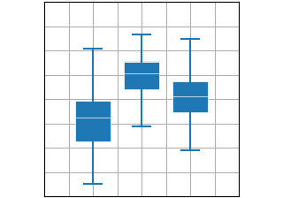

Statistics plots# Plots for statistical analysis. hist(x) hist(x)  boxplot(X) boxplot(X) errorbar(x, y, yerr, xerr) errorbar(x, y, yerr, xerr) violinplot(D) violinplot(D) eventplot(D) eventplot(D) hist2d(x, y) hist2d(x, y) hexbin(x, y, C) hexbin(x, y, C) pie(x) pie(x)